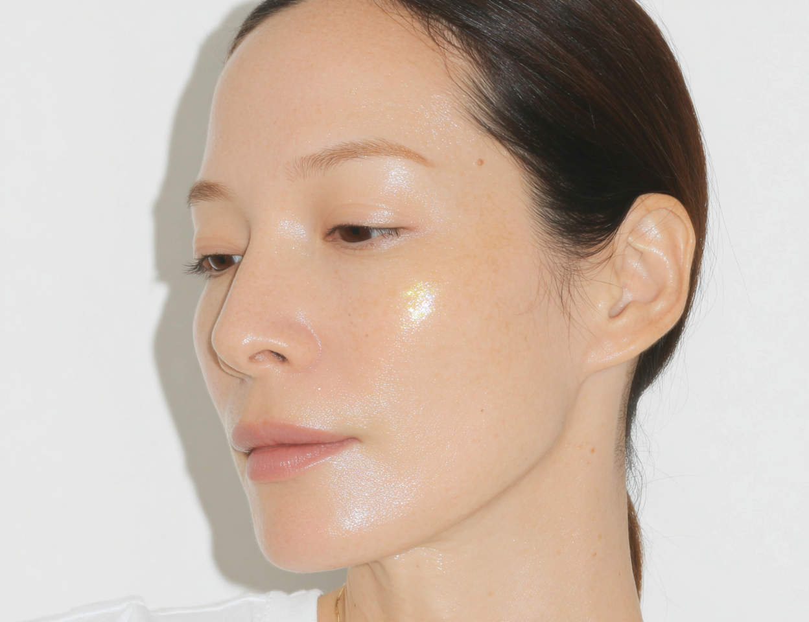
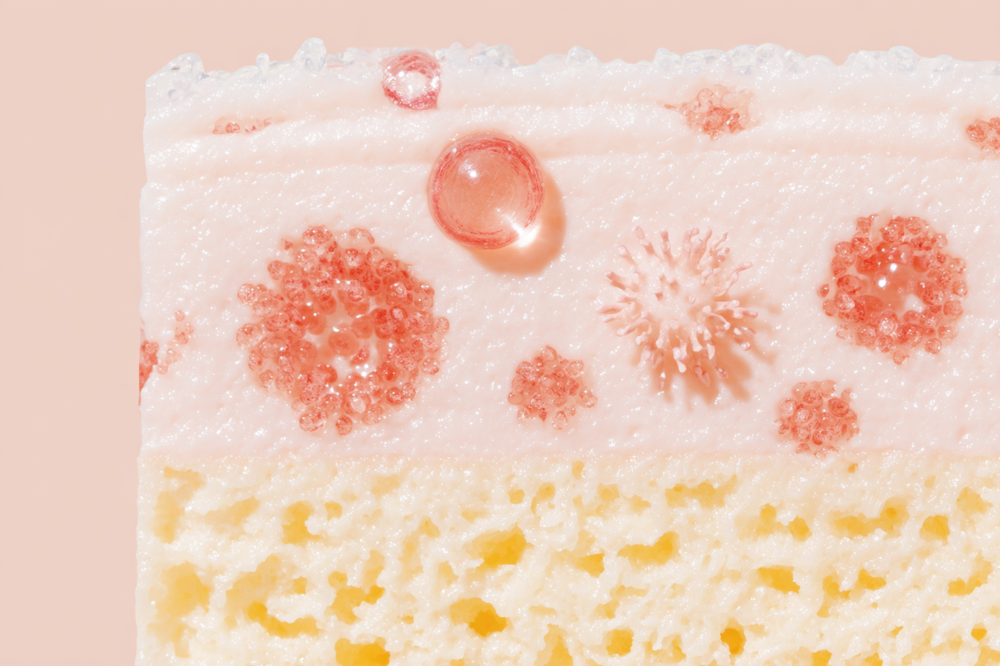
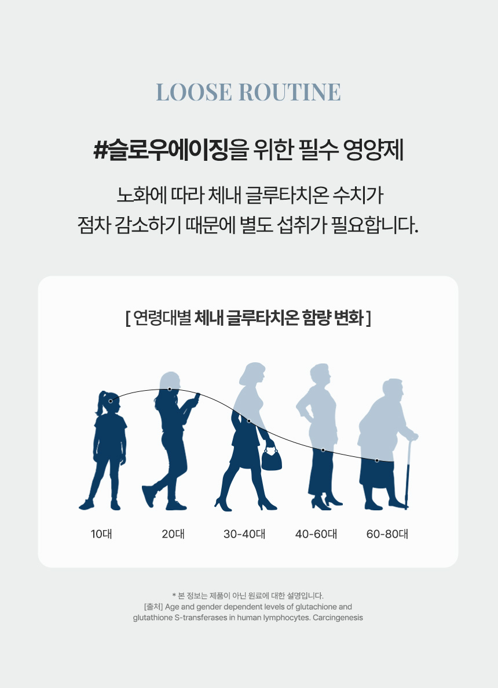
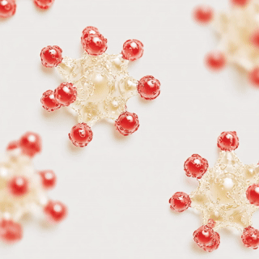
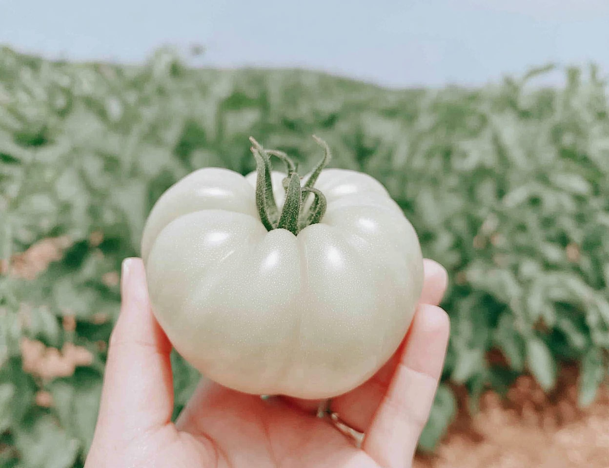
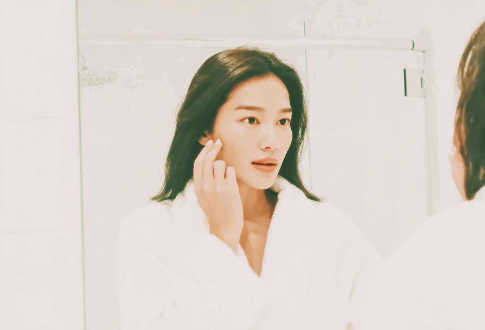
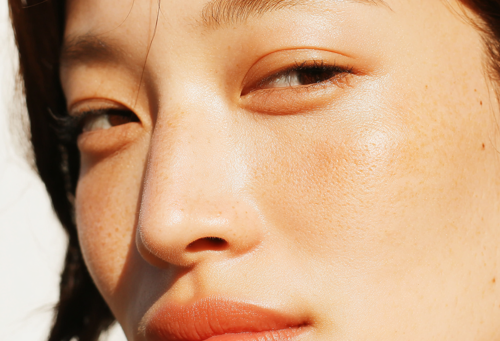
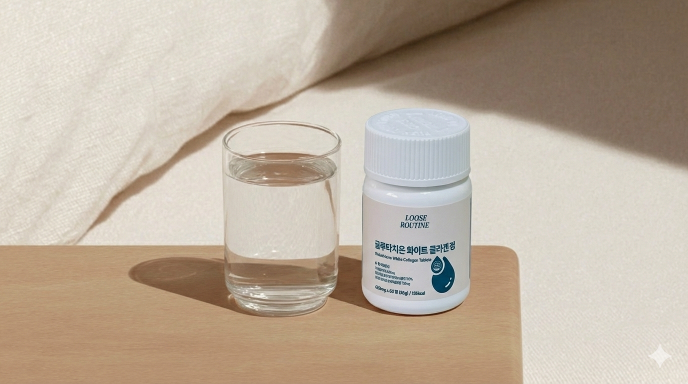

세안도 하고 수분크림도 바르는데
왜 얼굴이 어둡고 칙칙할까요.

칙칙함의 원인은 피부 표면이 아니라 세포 안쪽에 있어요.

글루타치온은 우리 몸이 스스로 만드는 마스터 항산화제예요. 피부과에서 미백 주사로도 쓰이는 성분이에요.
나이가 들면서 글루타치온이 줄어들고, 자외선과 스트레스가 더 빨리 소모시켜요. 외부에서 보충해야 하는 이유예요.


하얀 토마토의 핵심은 자외선을 튕겨내는 무색 카로티노이드(피토엔, 피토플루엔)이에요. 글루타치온이 피부 속 멜라닌 생성을 억제한다면, 화이트토마토는 외부 자외선으로 인한 멜라닌 산화를 방어해요.
루즈루틴은 피부 속을 정화하는 환원형 글루타치온(효모 추출물)과 겉을 방어하는 화이트토마토 추출물을 함께 배합했어요.
두 성분의 항산화 시너지로 칙칙한 피부톤을 안팎으로 동시에 관리할 수 있는 이유예요.

알코올이 분해될 때 글루타치온이 대량 소모돼요. 간이 해독에 집중하면서 피부에 보낼 글루타치온이 사라지는 거예요.
글루타치온을 미리 보충해 두면 해독 속도가 빠르고, 다음 날 피부색이 달라요. 술 마시기 전날 복용하는 이유예요.

일반 글루타치온은 소화 과정에서 분해돼 흡수율이 낮아요. 루즈루틴은 환원형(Reduced) 글루타치온을 사용해요.
| 구분 | 일반 글루타치온 | 환원형 글루타치온 |
|---|---|---|
| 형태 | 산화형 (GSSG) | 환원형 (GSH) |
| 소화 시 분해 | 대부분 분해됨 | 분해 최소화 |
| 체내 활성 | 낮음 | 높음 |
| 피부 효과 | 불명확 | 멜라닌 억제 연구 |
먹는 글루타치온은 성분 못지않게 흡수율이 중요해요. 환원형인지 확인하고 고르는 이유예요.


환원형 글루타치온(항산화) + 화이트토마토(자외선 방어) + 저분자 피쉬콜라겐 3,600mg(탄력 구조)을 한 번에 담아 흡수율과 스킨케어 시너지를 모두 잡았어요.
피부과 주사 말고, 환원형 글루타치온과 화이트토마토의
강력한 항산화 시너지로 매일 조금씩 맑게 채워보세요.
식후 2캡슐. 한 달이 다르고, 술 마신 다음 날이 달라요.
루즈루틴 글루타치온 보러가기